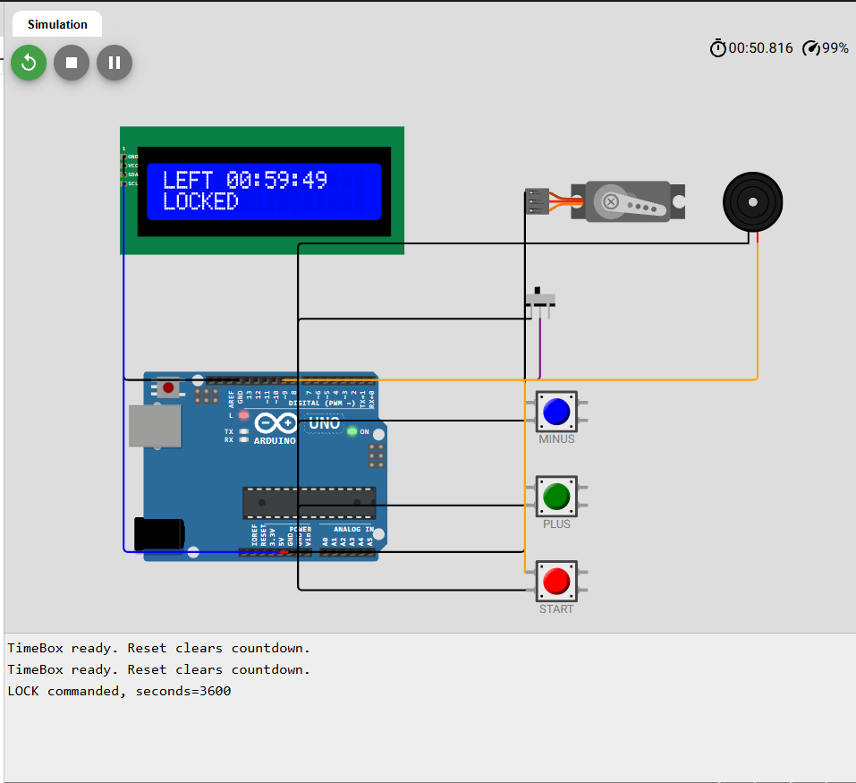
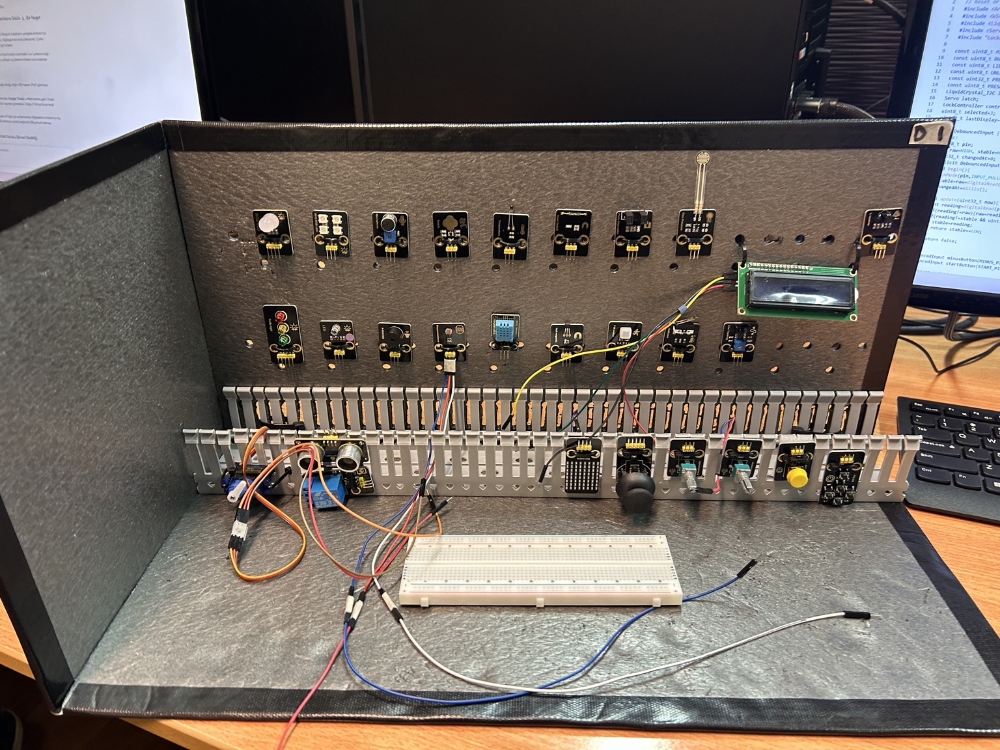
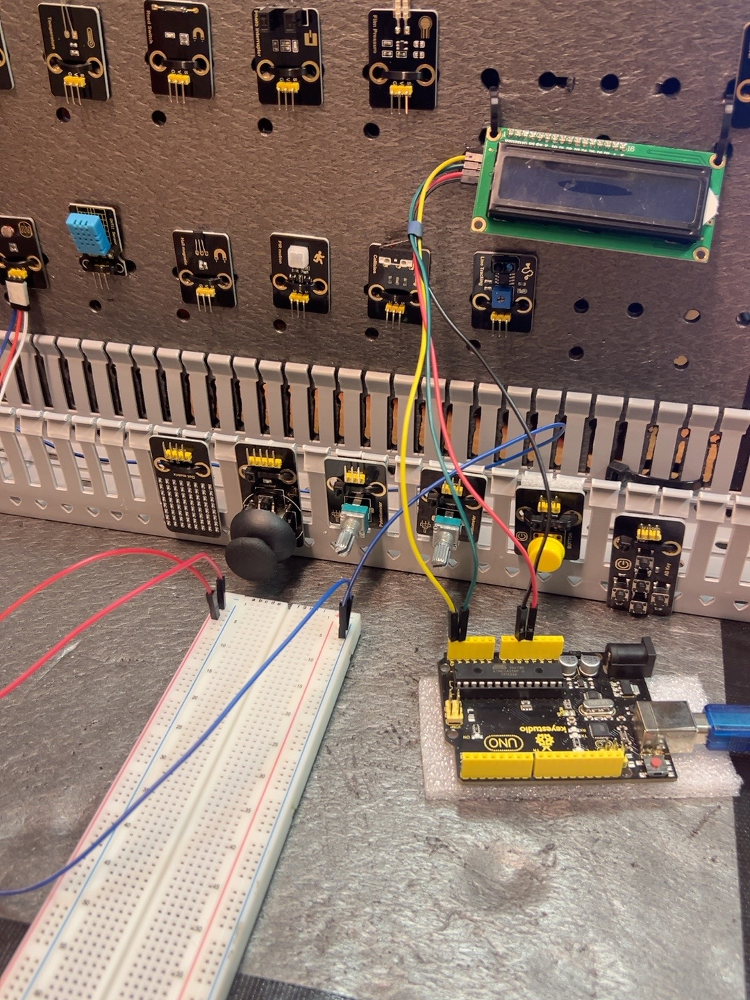
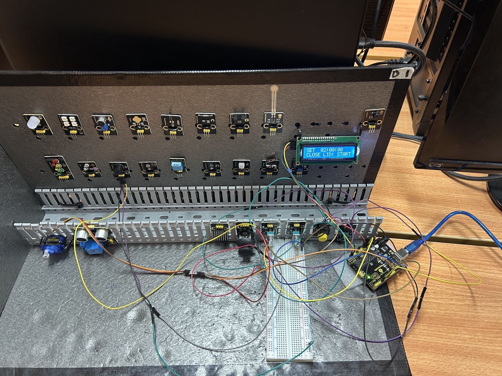

01
Choose the time
Two buttons on an analog keypad select a preset. The LCD shows the chosen duration.
A small timed lockbox that creates a waiting period before the user can open the lid.
The display, keypad, START button, countdown, servo, and buzzer are reported working on the bench prototype. A completed box and mechanical latch have not been verified.
The idea is to place cigarettes inside a box and choose how long it should stay closed. The prototype uses physical buttons and an LCD. It does not need a phone or an internet connection. Its effect on smoking behaviour has not been measured.
Two buttons on an analog keypad select a preset. The LCD shows the chosen duration.
The user closes the lid by hand and presses the yellow button. The program sends the servo a lock command and starts counting.
When the countdown ends, the servo receives an unlock command. The buzzer gives an audible alert at the end.
There is no lid sensor. “LOCKED” on the screen describes the command sent by the program; it does not prove that the latch is physically closed.
The bench uses an Uno compatible board, a 16×2 I2C LCD, an analog keypad, a yellow button module, a micro servo, a buzzer, a breadboard, and jumper wires. The reed switch used in the first concept was removed.
| Signal | Uno connection | Purpose |
|---|---|---|
| START button S | D4 | Start a new countdown |
| Keypad S | A0 | Read different button values |
| Buzzer S | D8 | End alert output |
| Servo orange wire | D9 | Servo position command |
| LCD SDA / SCL | A4 / A5 | Send text to the LCD |
| Module ground connections | Common GND | Shared reference |
Reported classroom power arrangement: LCD VCC connects to 5V. Following the instructor's direction, the shared positive rail was connected to 3.3V; the student reported putting the servo red wire on that rail. Exact servo ratings and available supply current still need to be recorded. This is a record of the bench wiring, not a verified voltage specification for all parts.
The program learns the released keypad reading and the user's chosen plus and minus buttons at every startup. It waits for stable readings to reduce button bounce.
The available times are 30 seconds, 15 minutes, 30 minutes, 1 hour, 90 minutes, 2 hours, and 4 hours. The default is one hour.
The program uses millis() to track elapsed time. During the countdown, it ignores changes to the selected time. It checks LCD addresses 0x27 and 0x3F.
The code uses Wire, LiquidCrystal_I2C, and Servo. Initial servo positions are 15° for unlock and 85° for lock; these need adjustment for the real latch.
I developed the project in stages, first testing the idea in Wokwi and then building the circuit in the laboratory. These are my original simulation screenshot and assembly photographs.
I built a simulation with an Arduino Uno, an I2C LCD, a servo, a buzzer, separate PLUS and MINUS buttons, and a START button. The original design included a lid input. The screenshot shows the countdown running with a one-hour lock command.

I identified the display, micro servo, buzzer, yellow START button, and analog keypad on the training panel. I placed the breadboard in front of the panel and began preparing the connections. Many other modules visible on the panel are not used in TimeBox.

I used the breadboard rails to collect GND and supply connections. I followed the G, V, and S labels on the button, keypad, and buzzer. I first left the Arduino signal ends loose for a wiring check. With help from the instructor, I then connected the LCD and the Arduino.

The laboratory assistant advised that the reed switch was not needed, so I removed it. I replaced the two separate adjustment buttons with the analog keypad at A0. START connects to D4, the buzzer to D8, and the servo signal to D9. The LCD uses A4 and A5. The instructor also adjusted the power wiring, as recorded in the hardware section.
I selected Arduino Uno and its USB port in Arduino IDE. I installed the missing LCD library, then used a single-file sketch to remove the old LockController.h dependency. The upload completed successfully. The LCD initially showed lines; after checking the display signal connections it showed “Hold key for +”. I calibrated two keypad buttons and ran a 30-second test. The timer, buttons, display, and servo worked. The buzzer has also been confirmed working in the latest bench update.
This is the latest physical assembly. The Uno is connected through USB and the LCD shows SET 02:00:00 and CLOSE LID: START. The photo confirms a displayed setting, not a completed two-hour countdown. The separate box and mechanical latch have not yet been verified.

TimeBox_Arduino.ino in Arduino IDE. Install LiquidCrystal I2C by Frank de Brabander (1.1.2) and Servo if needed.The build photographs above document the assembly and the readable physical LCD. Countdown and servo results come from my bench test; a still photograph cannot confirm movement, sound, or elapsed time.
| Test | Status | Evidence or limit |
|---|---|---|
| Code upload | Reported pass | Arduino IDE showed “Done uploading”. |
| LCD | Reported pass | “Hold key for +” appeared after a wiring check. |
| Keypad, START, and countdown | Reported pass | The student reported successful operation of the keypad, START button, and countdown. |
| Servo movement | Reported pass | Included in the student's successful core-function test. |
| Buzzer sound | Reported pass | The student confirmed that the buzzer works in the latest bench update. |
| Box and latch under load | Not tested | No completed enclosure test provided. |
| Long-duration runs | Not tested | No one-hour or four-hour test provided. |
Reset or power loss clears the timer and commands the unlock position. The system cannot detect an open lid or a blocked latch. It is an educational prototype, and its physical security has not been established.